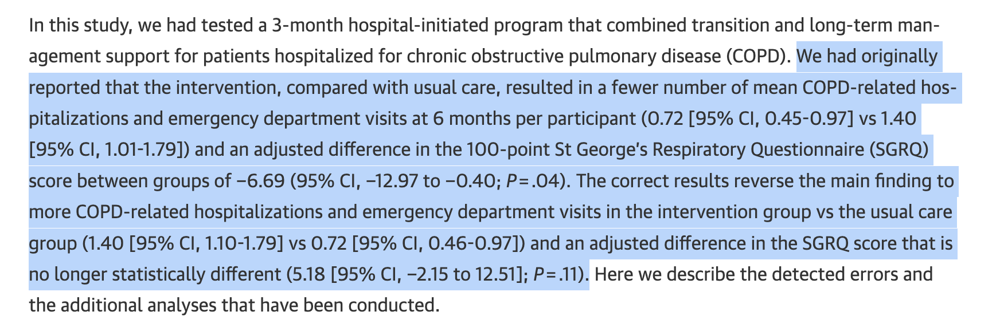

Why Programming is a Critical Skill for Statisticians
Guest Lecture at National Taiwan University
Daniel Sabanés Bové
RCONIS
November 11, 2024
Objective of this talk
- I would like to inspire you with my career path
- I would like to motivate you for the following programming lectures
- I would like you to strive to get yourself savvy in good software engineering practices and apply them in your projects
- I would like you to influence your statistics colleagues and departments in your organizations
My career path
My path to Statistics
- I was good in math and I really liked stochastics
(“What is the chance of winning the lottery?”) - But I always had fun programming
(Remember those days of Basic and Turbo Pascal?) - I was also interested in medicine …
… but I could faint when watching somebody draw blood from my arm - So I chose statistics because I could combine math and programming, and work with medical data!
- I was formally trained as a statistician (B.Sc., M.Sc., Ph.D.)
- I started working in the Pharma industry as a biostatistician
What I did not do during those first years
- I did not store my programs in version control systems
- I did not worry too much about making my code readable by others
- I did not try to make calculations reproducible
- I did not get any code review of my simulations
- I did not write any unit tests for my packages
Some tricks I learned in Google
- After about 5 years I had the opportunity to switch gears and work at Google
- I learned a lot quickly about:
- how to write unit tests
- how to use a consistent code style
- how to write design documents
- how to name functions
- how to review code and respond to review feedback
- how to check in code into the (internal) repository
- Also, but not that important:
- how to write SQL queries, macros, unit tests for those
- got to know memes and how to create new ones
But Healthcare was more fun for me
- I really liked that I did a lot of programming in a structured way in Google
- But I missed the scientific aspects from Healthcare …
… where we deal not just with numbers, but also biology, medicine, patients, medical doctors, etc. - And Roche just started venturing more into R territory
- So I switched back to Roche, because it is a great place to work
- And I see lots of potential to apply Tech skills in Healthcare!
⇨ This is the topic this presentation
⇨ How can we improve the way we work with code in Healthcare?
Started our own Consulting Company
- Background: Wanted to relocate (at least for a couple of years) to Taiwan
- Idea: Be able to work in Taiwan by doing remote statistical consulting
- Founded RCONIS in the middle of this year
- Focus on statistical software and statistical consulting
- Website: rconis.com
RCONIS Team

Why is programming so critical?
Banking example
https://techhq.com/2024/01/what-role-does-tech-play-in-the-post-office-scandal
Banking example (cont’d)
Banking example (cont’d)
Politics example

Politics example (cont’d)

Another example, now from biostatistics

Another example, now from biostatistics (cont’d)
Another example, now from biostatistics (cont’d)

Programming is ubiquitous, but (still) neglected
Note
- I am trying to zoom in here on the “pain points”
- This is based on anecdotal stories from different organizations
- This is not based on surveys or quantitative evidence collected in a structured way
(Almost) all statisticians are programming
- We don’t use calculators anymore, right?
- There are a lot of graphical tools that we can use for simple tasks …
… but it won’t be sufficient for most biostatistics use cases - We learn programming, maybe already in high school, or latest in undergraduate courses
- We wrangle, analyze, visualize, predict, … data with code every day
But many don’t take it serious enough
- Most of the coding we do alone without any discussion or review
- We often copy and paste code from each other and adapt it every time
- We often shy away from sharing our code because we think it is too ugly
- We often don’t take enough time to write clean code because we are too busy
- We often just develop code locally on our laptops
- We rarely use version control systems
Why is this a problem?
Cannot handover to other statisticians
- Statisticians (too) take vacations, go on longer leave, finish their PhD/PostDoc, etc.
- Then another statistician (peers, managers) needs to back up or take over the project
- They might need to revisit the design or analyses and thus need to modify the code
- Might not find the code at all (because not in a version controlled repository)
- Might not be able to understand the code (because unreadable by others)
Cannot maintain code
- Not just switching between different statisticians, but also over time, things can become difficult
- When I read code from one, two years ago, it is almost code from another person
- If I look back at my quickly written, ugly code, which is not documented, I have a very hard time
- In the “copy and paste workflow”, you can’t help anybody else
- If you discover bugs, those cannot be fixed across projects in one go
- If you add features, they cannot be used by anybody else
Cannot prevent bugs
- If we modify the code and don’t have tests, we simply don’t know if it still works correctly
- Typically we just run then the whole script again and if it does not fail with an error we think it is fine
- But it might still produce wrong results due to new bugs
- And if we fix a bug, and don’t add a test for it at the same time, it might come back later
- This is even more important in software packages that we create for us and others
Cannot reproduce results
- When we don’t prepare for it, new versions of software packages can lead to different results
- Very hard to reproduce manual steps:
- e.g. moving data around, running scripts, creating documents, etc.
- would need to be thoroughly documented to have a small chance, but that is usually omitted
- But Statistics is a key component of the scientific value chain …
… thus has a responsibility to ensure reproducibility
What can we do about it?
Become aware of the issues
- Most statisticians actually have examples where lax programming led to such problems
- Let’s realize that a lot is at stake:
we are not building airplanes that could fall from the sky …
… but we are impacting important decisions! - For example, in a pharma company, it matters for patients that we
- calculate the right sample size of a clinical trial,
- more generally determine the right clinical trial design,
- help finding the right medicine candidates based on preclinical experiments,
- etc.
Become aware of the issues (cont’d)

Significance, 18 (3): 6-7. https://doi.org/10.1111/1740-9713.01522
Take programming seriously
- We know what we should do, let’s just take the time and energy to do it
- There are lots of low hanging fruits:
- organize ourselves with standards (starts with naming conventions for files and folders)
- avoid manual errors by automating repetitive tasks
- consider double programming of key research analyses
- Processes should consider code in the same priority as documents (statistical analysis plans, grant proposals, etc.)
- that implies code review, good and consistent code style, ensuring business continuity, …
- Strive to be on par with Tech companies with regards to coding quality
Take software engineering seriously (cont’d)
Significance, 18 (4): 42-44. https://doi.org/10.1111/1740-9713.01554
Educate, educate, educate
- Starts with secondary schools:
- computer science should become a standard subject, not just be an extra
- same importance as math, geography, physics, etc.
- Continues at university with undergraduate and graduate programs:
- computer science must become a key component of statistics and data science programs
- good software engineering practices warrant dedicated courses
- Continues with post-graduate education during the work life:
online courses, software engineering workshops, conference sessions, etc.
Establish dedicated teams
- Research Software Engineering (RSE) teams are now established in academia, including data science institutions
- Similarly pharma companies are establishing software engineering focused teams
- Direct focus is often development of reusable software
- We should not stop there but also strive to improve the day to day work:
biostatistics, medical writing, preclinical experiments, etc. - Software engineering work is complex, so we need top talents for this
Collaborate across organizations
- More natural now that we use R and other open source software
- Has become very easy in the last decade
(e.g. video conferencing, cloud based documents, code sharing platforms) - Loosely coupled software modules allow to “plug and play”
- combining different modules to make them fit company standards
- connecting to internals via company specific extensions
- Key opportunity in contrast to previous proprietary software based, point-and-click, analyses
Just a few pointers
R Package crmPack
crmstands for continual reassessment method (Bayesian design for dose escalation)- We started in 2013 with custom R scripts running
JAGScode to run Markov Chain Monte Carlo (MCMC) - Realized in 2014 that we need to have a way to avoid copy and paste of these via an R package
- Published on CRAN in 2015
- Described in a paper in 2019, and other companies started to use it
- Joined forces about end of 2021 to develop the package further together
Working group openstatsware
- Has been founded in August 2022 as working group in the ASA Biopharmaceutical Section
- \(>\) 50 members from \(>\) 30 pharma companies, CRO, etc.
- open for new members
- Focuses on
- building packages together (already on CRAN are
mmrmandbrms.mmrm) - disseminating good software engineering practices (workshops, videos)
- building packages together (already on CRAN are
- Visit openstatsware.org to learn more
Guidelines for good practices
rOpenSci- Non-profit initiative founded in 2011
- Staff, process, guidelines for Statistical Software Peer Review of R packages
- The Turing Way
- Started in 2019 as a guide for reproducibility (covering Version Control, Code Testing, and Continuous integration)
- Now encompasses guides for Reproducible Research, Project Design, Communication, Collaboration, Ethical Research
openstatsguide- Minimum Viable Good Practices for High Quality Statistical Software Packages
Workshops teaching good practices
- “Good Software Engineering Practices for R Packages”
- 5 events in 2023 in Basel, Shanghai, San José, Rockville, and Montreal
- 4 events in 2024 in Zurich, Salzburg, Beijing, and recently online at R/Pharma APAC!
- “The Carpentries”
- Teaches foundational coding and data science skills to researchers worldwide
- Teaching material on software, data, and library is available
Conclusion
Conclusion
- A lot in statistics depends on doing the programming well
- Now is your chance to get savvy with the tools and good practices yourselves
- You are the next generation of statisticians - use the opportunity to improve the way we work with code!
Thank you!
These slides are at
danielinteractive.github.io/ntu-nov-2024
Welcome to connect at
linkedin.com/in/danielsabanesbove
Why Programming is a Critical Skill for Statisticians | License